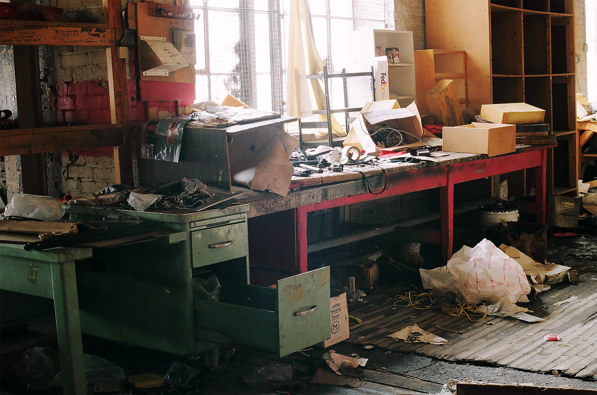
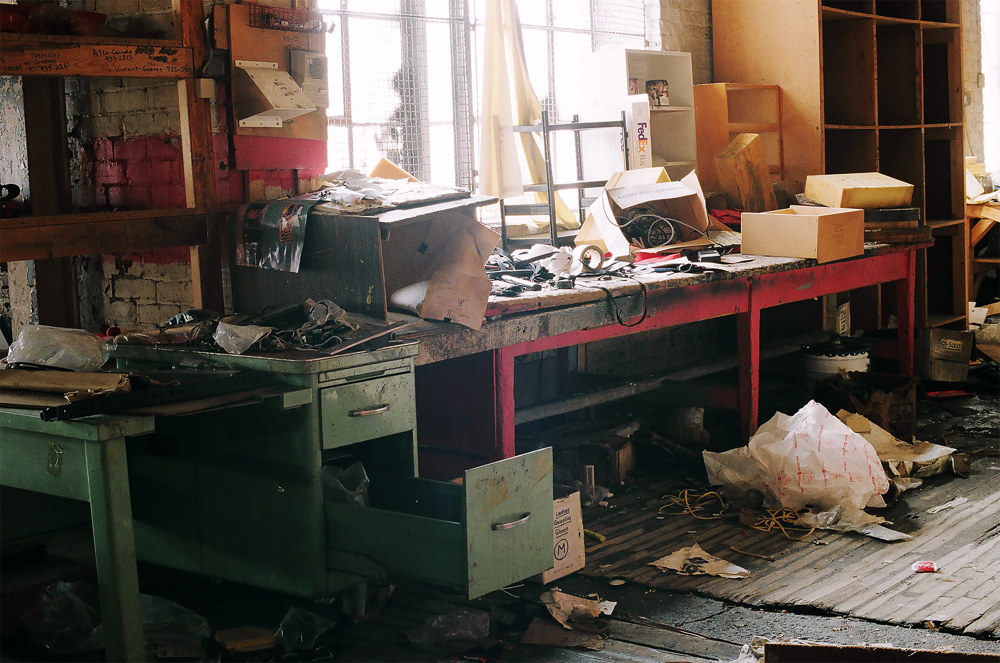
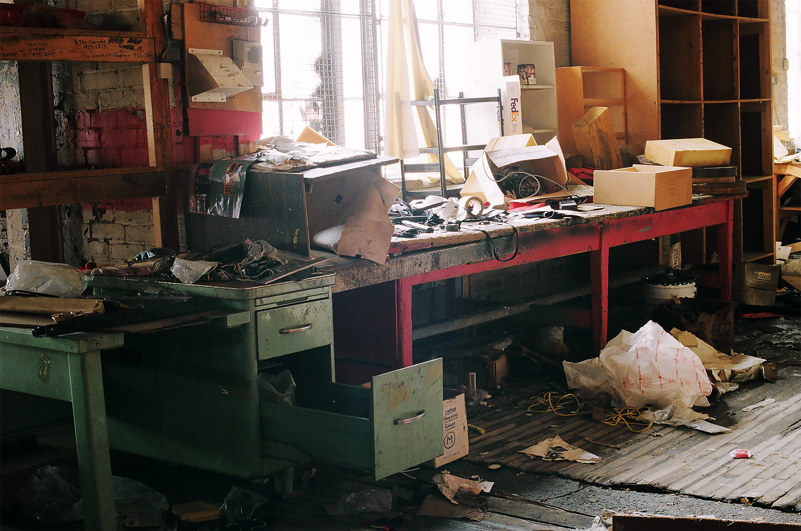
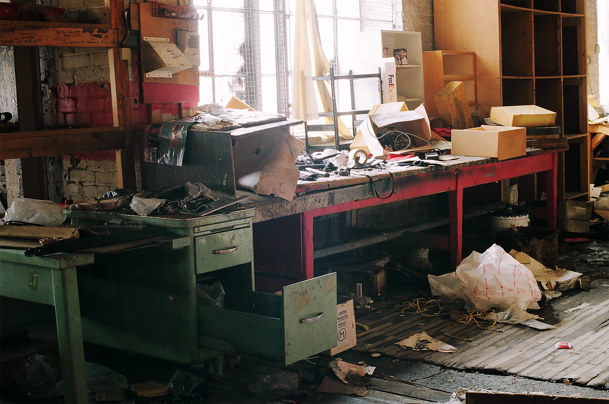

 

Stonks provides jumbled business news and accurate data.

72V, 20A electric drivetrain on an old broken small dirtbike (pitbike).


Various 35mm and medium format images


Advanced 3D modeling software allows for the creation of extremely detailed virtual 3D objects. Photographs shot with DSLR. Texture file created in Photoshop. Modeling, simulation, and rendering in Blender


Heat Paint is the interface for an artificial ambient intelligence. People walking through the space are observed as objects whose behaviors are continually analyzed, categorized, and used to build a model of the world within the framework of its own "brain." When viewing this piece, one is observing an observation of oneself—an infinite feedback loop of perception and cognition.


Trailer for short thriller originally shot in 2011
Sensenet is an experiential installation employing electrical muscle stimulation
devices, live audio streaming, and other technologies that place the participants
into a completely foreign sensory environment - an altered umwelt.
Made in collaboration with Zahraa Chorghy, Matthew Halpenny, Naila Kuhlmann, and Matthew Salaciak.
Documentation shot by Cristian Zaelzer